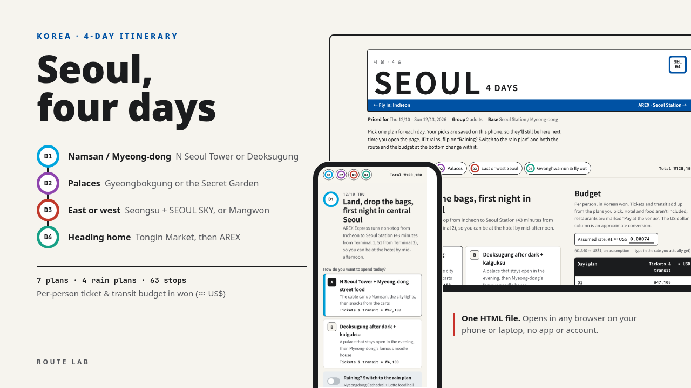

4-DAY ITINERARY · KOREA
Four days from a hotel near Seoul Station: Namsan and Myeong-dong on the first night, two Joseon palaces, Seongsu or Mangwon and Hongdae on Saturday, and a market lunchbox before AREX back to Incheon.
Below is a free outline of the itinerary: where each day goes, what to book, and what it costs. The download adds the stop-by-stop times, a Google Maps link and a checked price for every stop, and a budget that adds itself up as you pick.

Each day has two or three plans to choose from and an indoor plan for bad weather. These are the neighbourhoods and the main stops; the times and the order are in the download.
The Namsan Cable Car and N Seoul Tower, then Myeong-dong's street-food carts. Or Deoksugung, which stays open into the evening, and knife-cut noodles at Myeongdong Kyoja.
Rain plan: Myeongdong Cathedral and the Lotte department store food floor
Gyeongbokgung and the Royal Guard Changing Ceremony, samgyetang at Tosokchon, Bukchon Hanok Village and Insa-dong. Or Changdeokgung with the English tour of the Secret Garden, the café lanes of Ikseon-dong and bindaetteok at Gwangjang Market.
Rain plan: The National Museum of Korea and the War Memorial of Korea
Warehouse cafés in Seongsu, Seoul Forest, then SEOUL SKY at the top of Lotte World Tower and Seokchon Lake. Or dakgangjeong at Mangwon Market, the Han River, Hongdae and the Gyeongui Line Forest Park.
Rain plan: Leeum Museum of Art
The Cheonggyecheon stream walk, the gate guards at Gwanghwamun and a coin-paid lunchbox at Tongin Market, then AREX Express from Seoul Station.
Rain plan: The National Museum of Korean Contemporary History and Kyobo Bookstore
Things that change how you plan the trip, from the research behind the itinerary.
Per person, from the prices on the itinerary. The ranges depend on which plan you pick each day; the download has every line.
| Item | Per person |
|---|---|
| AREX Express to and from Incheon | ₩26,000 |
| Day 1, Namsan tower or Deoksugung | ₩4,100 – ₩47,100 |
| Day 2, palaces (Secret Garden tour adds ₩5,000) | ₩6,100 – ₩11,100 |
| Day 3, SEOUL SKY or Mangwon and Hongdae | ₩4,650 – ₩37,850 |
| Day 4, subway | ₩3,100 |
| Total | ₩44,000 – ₩125,000about US$33 – 93 |
Tickets and transit only. With the default plans it's ₩120,150 (about US$90) per person; hotel and food aren't included. Prices were checked in October 2026 and can change; confirm before you go.
Two observation decks make up most of the budget: the cable car and N Seoul Tower on day 1 (₩44,000 together) and SEOUL SKY on day 3 (₩33,000).
Skip both and the trip costs under ₩45,000 in tickets and transit. The National Museum of Korea's permanent galleries, the War Memorial and Leeum's permanent collection are free.
One HTML file for your phone or laptop. No app, no account. It doesn't book anything.
US$10 on Gumroad, with a refund within 14 days if the file is broken or won't open.
The Trip Page Bundle (US$29) has Tokyo, Osaka & Kyoto, Hokkaido, Tainan and the group trip template. It doesn't include Seoul, so buy this one on its own.